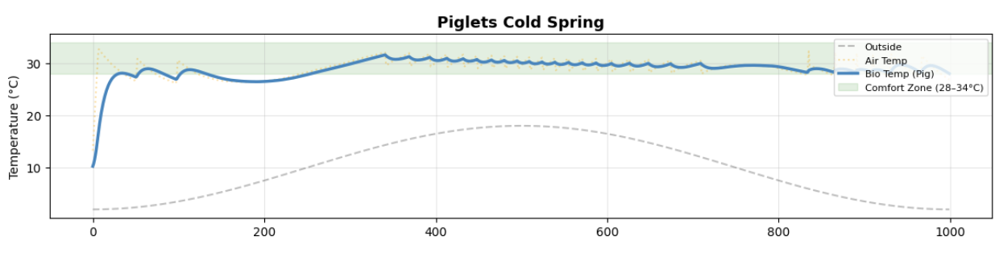
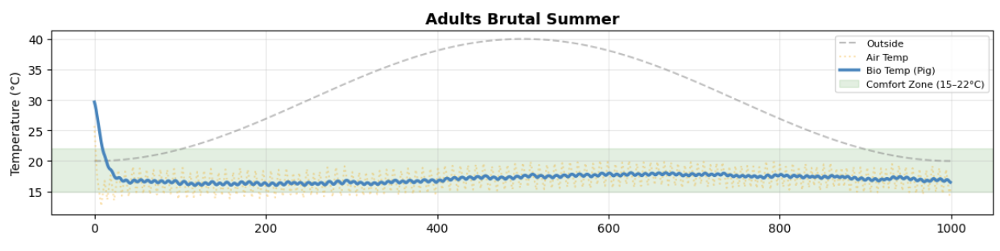

A reinforcement learning agent that learns thermal control in a pig barn and autonomously actuates heaters, fans, and sprinklers to keep herd temperature within comfort bands across changing conditions. Trained with PPO over 3.0 million steps on an 18-dimensional sensor observation space with curriculum learning across mixed-age herds, the policy adapts to thermal stress, sick events, and seasonal variation while minimizing energy use and equipment switching.
Temperature, humidity, CO₂, clock, equipment states, herd counts
Sensor values plus availability flags for missing sensors
Learns when to heat, cool, hold, or reduce switching
Heater 1, heater 2, fan 1, fan 2, sprinkler
Air temp, perceived temp, stress, humidity, and CO₂ update
Thermal stress is one of the leading causes of reduced growth rates, illness, and mortality in commercial pig farming. Manual monitoring is reactive and inconsistent especially across barns with mixed-age herds. The agent learns to balance comfort, energy efficiency, and equipment durability across dynamic environmental conditions.
Piglets, young pigs & adults need different temperature ranges. The controller learns how to balance when the barn has a mixed-age herd.
The PPO policy learns when to heat, cool, or hold steady based on the current barn state instead of using fixed manual rules.
The system works with practical barn inputs such as temperature, humidity, CO₂, herd counts, and simple on/off equipment controls.
The PPO agent receives an 18-dimensional observation vector every timestep and outputs 5 binary actions: heater1, heater2, fan1, fan2, and sprinkler. Sensor values are masked when unavailable, and the herd composition changes across evaluation scenarios to test robustness.
Below are two key evaluation scenarios showing the model's ability to maintain thermal comfort under stress. Each includes temperature traces, stress metrics, and recovery performance. These representative cases demonstrate generalization across age groups and environmental conditions.
Avg outside 15°C · ±10°C swing · Sick event active

Representative summer thermal stress scenario

This five-stage workflow reflects the current notebook implementation: environment design with curriculum learning, 2.0M-step base training on mixed-age herds, followed by 1.0M-step finetuning with stricter control penalties, and comprehensive scenario-based evaluation across thermal and disturbance conditions.
The environment is defined with an 18-dimensional observation space and 5 binary control actions. Sensor masking allows the policy to handle missing inputs during deployment.
The simulation models barn temperature, pig perception, and environmental factors. The reward balances thermal comfort, energy use, and equipment stability, with curriculum learning across herd complexity.
The policy is trained over 2 million steps using 8 parallel environments with normalized observations. This stage teaches basic thermal control across varying conditions.
An additional 1 million steps refine the policy with stronger penalties on inefficient actions like heater–fan conflicts and excessive switching, improving stability and realism.
The trained policy is evaluated across multiple scenarios, measuring comfort time, thermal stress, recovery behavior, and equipment usage under different environmental conditions.